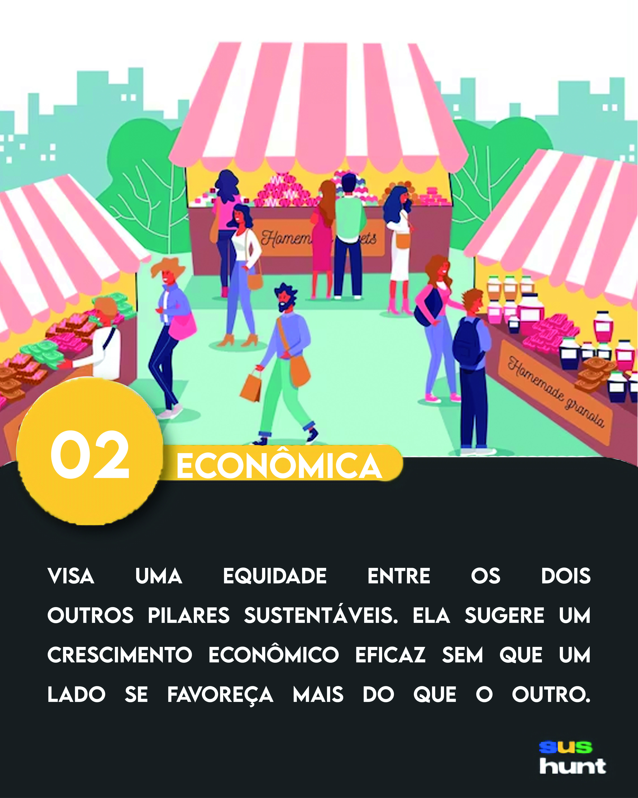

Sustentabilidade Econômica
Parabens por chegar até aqui! Você acaba de concluir um terço da caçada e está mais perto da vitória, mas ainda tem caminho para ser percorrido. Aqui, além de darmos uma cartinha colecionável, a qual você precisa pra concluir o jogo, também vamos te dar uma das três partes da dica que te levará para linha de chegada.
{kind=link}
Mas antes disso, aqui vai uma curiosidade sobre a sustentabilidade econômica:
Algumas plataformas como Airbnb e Uber promovem a economia compartilhada, permitindo que recursos subutilizados sejam aproveitados de maneira mais eficiente. O que pode reduzir o número de produtos sendo fabricados e com isso diminuir o desperdício e o impacto ambiental.
Agora que você já entende um pouco sobre a sustentabilidade econômica, chegou a hora de continuar o nosso jogo. o trecho a seguir será a terceira parte da dica que vai te levar a vitória. “...ambos na base de tudo. ”. Mas lembre-se você ainda precisa encontrar as duas cartas restantes que representam os outros dois pilares da sustentabilidade, são elas que te darão as outras partes da dica que leva a linha de chegada.